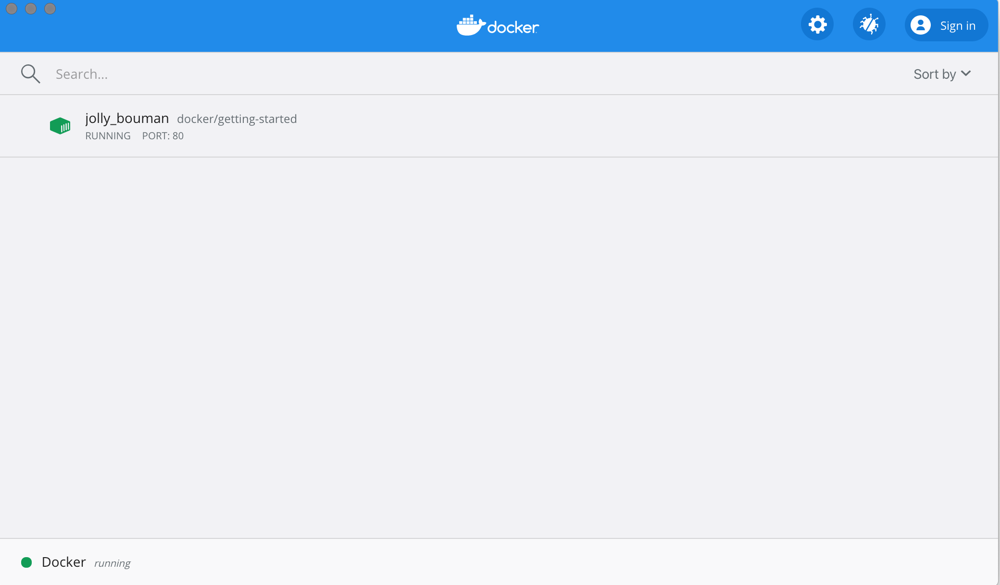

Orientation and setup
Welcome! We are excited that you want to learn Docker.
This page contains step-by-step instructions on how to get started with Docker. In this tutorial, you’ll learn how to:
- Build and run an image as a container
- Share images using Docker Hub
- Deploy Docker applications using multiple containers with a database
- Run applications using Docker Compose
Download and install Docker
This tutorial assumes you have a current version of Docker installed on your machine. If you do not have Docker installed, choose your preferred operating system below to download Docker:
For Docker Desktop installation instructions, see:
Start the tutorial
If you’ve already run the command to get started with the tutorial, congratulations! If not, open a command prompt or bash window, and run the command:
docker run -d -p 80:80 docker/getting-started
You'll notice a few flags being used. Here's some more info on them:
-d- run the container in detached mode (in the background)-p 80:80- map port 80 of the host to port 80 in the containerdocker/getting-started- the image to use
You can combine single character flags to shorten the full command. As an example, the command above could be written as:
docker run -dp 80:80 docker/getting-started
The Docker Dashboard
Before going too far, we want to highlight the Docker Dashboard, which gives you a quick view of the containers running on your machine. It gives you quick access to container logs, lets you get a shell inside the container, and lets you easily manage container lifecycle (stop, remove, etc.).
To access the dashboard, follow the instructions in the
Docker Desktop manual. If you open the dashboard
now, you will see this tutorial running! The container name (jolly_bouman below) is a
randomly created name. So, you'll most likely have a different name.

What is a container?
Now that you've run a container, what is a container? Simply put, a container is simply another process on your machine that has been isolated from all other processes on the host machine. That isolation leverages kernel namespaces and cgroups, features that have been in Linux for a long time. Docker has worked to make these capabilities approachable and easy to use.
What is a container image?
When running a container, it uses an isolated filesystem. This custom filesystem is provided by a container image. Since the image contains the container's filesystem, it must contain everything needed to run an application - all dependencies, configuration, scripts, binaries, etc. The image also contains other configuration for the container, such as environment variables, a default command to run, and other metadata.